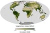

vegetation
phenomenon

Would you like to link to an existing definition or create a new one? You may check whether a definition exists or add a defintion of this term to Wikipedia and then let us know! so we can add it to the ontology.
Occurs in:
- land_vegetation_canopy_water__interception_storage_factor
- land_vegetation_canopy_water__evaporation_volume_flux
- atmosphere_bottom_air_flow_vegetation__log_law_roughness_length
- delta_plain~upper_vegetation__mean_of_height
- land_vegetation__annual_time_max_of_leaf-area_index
- land_vegetation__leaf-area_index
- land_vegetation__reference_stomatal_resistance
- land_vegetation__time_min_of_stomatal_resistance
- land_vegetation_canopy__area_fraction
- land_vegetation_canopy_water__interception_capacity
- land_vegetation_canopy_water__interception_volume_flux
- land_vegetation_canopy_water__throughfall_volume_flux
- land_vegetation_canopy_water__transpiration_volume_flux
- land_vegetation_floor_water__interception_volume_flux
- land_surface_vegetation_water__evapotranspiration_mass_flux
- land_surface_vegetation_canopy_water__mass-per-area_density
- land_vegetation_canopy_water__evaporation_energy_flux
- land_vegetation_water__transpiration_energy_flux